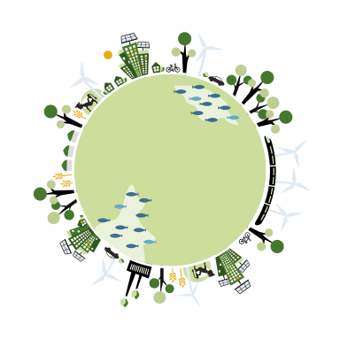

Estimate the climate benefits of investing in renewable energy
WELCOME!
What could be the potential climate benefits if your investment fund starts to put a certain percentage of its money directly into renewable energy?
The calculator allows you to estimate how much a given amount of investment can contribute to build a more sustainable future where renewable sources of energy, such as wind, sun and water, provide our societies with the necessary energy.
To use this tool, you only need a few data inputs on the size of the investor, and the investment's period, and our modelling tool will do the rest. You can also change all parameters in the table below under “background data”.
The following infographics give you an overview of the main results you can get from the calculator. How many new renewable power plants? How much new clean electricity? And how much greenhouse gases averted?
You can download all graphical elements and tables showing the results of your analysis, for use in both external and internal communication products, including social media.
For information about the limitation of the calculation produced by this tool, please refer to the methodology chapter in the report for more details.
Data inputs: it's your turn!
Now you have the possibility to create your own case study! Simply edit the following fields. The changes are automatically saved in your browser, and you can go back to default just by pressing the “Reset” button.
For illustrative purposes, we have inserted similar numbers to the one we use in a case study of Norway’s sovereign wealth fund, which own almost 1 trillion USD in assets. Change these numbers with your own to create your personalized case.
Summary of results: Infographic
This is a graphical summary of all the main results. Elements are pre-arranged so that you can simply take a screenshot of the page, and have a product ready to be used.
in renewable energy

The dividing of investments in the various technologiesi
28%
hydro
6%
bioenergy
36%
wind
1%
geothermal
29%
solar pv
1%
concentrated
solar power
Results
This section provides a more comprehensive presentation of the results of your calculations, thanks to five pre-defined graphs. In addition, in the section called “Key results (tables)”, you will find all numbers in a table. This allows you to have a more detailed review as well as to develop other graphs of interest to you.
This graph shows how much money is invested annually (left bar) and how the investments build up to reach the target (right bar), that is .
This graph visualizes the energy mix which is used to allocate the investment in every technology (based on the first year of the scenario). In short, the money invested every year are allocated to different technologies for the generation of renewable energy, according to this scheme. This default allocation is based on the International Energy Agency’s scenario for the investmed needed in the next years. Until 2020, the central scenario is used (New Policy Scenario), while after 2020 and until 2040 we chose the 450 scenario, which shows the path needed to limit global warming to 2-degrees Celsius. This is the goal that almost all countries in the world have agreed upon.
This graph shows how investments are allocated to the various renewable energy technologies. The default allocation or electricity mix is based on the IEA’s energy scenarios. The mix until 2020 is based on a central scenario (New Policy Scenario), while after 2020 and until 2035 it is based on the 450S scenario, which shows the path needed to limit global warming to 2-degrees Celsius.
This graph shows theoretically how much new capacity is installed every year: this means new solar panels and wind turbines, geothermal plants, hydropower dams, and so on. Electricity generation capacity indicates the maximum electric output a generator can produce.
This graph shows the theoretical amount of electricity generated every year for the lifetime of the power plants. In fact, every technology has a different life-cycle (see background table). For example, a hydropower plant is in operation for 50 years, while a wind turbine for 25 years. Data on average lifetime is provided by IPCC, and the user can edit it. This graph also lets you compare the annual electricity generation to a number of your choice. For example, youone can choose to compare it to the annual electricity generation of a country, or a city, or a power plant.
BACKGROUND DATA
This model relies on different datasets provided by the Intergovernmental Panel on Climate Change (IPCC) and the International Energy Agency (IEA). These contain information on how many years a typical power plant is in operation, how many hours per year the generator is producing electricity, the emissions generated by different technologies, and the costs of building different types of power plants.
The following tables includes all background data we use. You are of course free to edit it and make your own assumptions. Please let us know if you find more updated sources. Changes are automatically saved. You can download the tables in a .tsv format, which can be easily imported in excel or other office suites.
Key results (tables)
In addition to the graphical representations of the main results, we provide a full overview of the numbers. Please expand the tables to get a detailed description.
Methodology
Here we provide a short summary describing the modelling approach used in this calculator. For a more complete description of the methodology.
Sources of data
All data used in the calculator are provided by the International Energy Agency (IEA) and the Intergovernmental Panel on Climate Change (IPCC).
Amount of investment
The first step in our modelling approach is to define the amount of investment that will form the basis for the subsequent calculations. In the calculator, you specify the market value of the fund(s) that you would like to test in your analysis. In addition, you specify a percentage share of that total market value which will be allocated directly to renewable energy investments.
Considering that this is a time-series analysis, it may also be relevant to insert a certain growth rate of the fund. The calculator allows you to insert a compound annual growth rate (CAGR). Such data may be publicly available. Please note that by default CAGR in the calculator is set to 0 percent.
We assume that the investor starts to invest in the first year and linearly build up to reach the target. For example, for a case where the investment starts in 2016 and where a target of 5 percent is set by 2020, the fund will invest 1 percent of its value every year for five years. For this modelling period, it is assumed that investments dedicated to infrastructure projects are “locked”, that is, once invested in one year, that financing is tied to a specific project throughout the modelling period.
Allocating investments to different technologies
The annual investments are allocated to different renewable energy technologies in accordance with their derived share of the world’s annual added electrical capacity. The renewable energy mix used here is taken from the IEA’s World Energy Outlook 2014, where different climate scenarios are presented. Based on the data available, the calculator incorporates the IEA’s central scenario, called “New Policy Scenario” (NPS) for the period 2016-2019. For the year 2020-2035, the calculator incorporates data from the 450 scenario (450S). This implies that the larger part of investments will go to wind power, followed by hydropower and solar PV. These three technologies will attract approximately 90 percent of annual investment for the whole period.
Estimation of added renewable energy capacity and associated electricity output
Once the amount of investment has been registered, the model calculates the new electricity generation capacity. Put differently: it estimates the typical amount of electricity generated from each technology. To calculate this, the model relies on three variables, all provided by IPCC:
1) Overnight capital cost (in USD/kW), which indicates the cost of building a power plant overnight as if there were no cost of capital.
2) Capacity utilization/full load hours (in hours): it expresses, for each technology, the number of hours that a generator would spend at full load if it always operated at that level.
3) Plant lifetime (in years), the number of years a typical power plant will be functioning.
The added capacity will be represented by new hydropower plants, solar plants, wind parks, geothermal facilities, and so on. These plants will generate a given amount of clean electricity every year. Based on this, we finally calculate the total electricity generated over the lifetime of the power plant.
It is important to note that this is not a practical investment case since there are a host of variables that would influence the actual financial viability of renewable energy projects, such as the presence of unforeseen costs during construction, financial costs, regulatory frameworks, and more. It should also be noted that we do not include future forecasts on how these factors will change due to technological progress, for instance reduced construction costs, increased efficiency and prolonged lifetime of the plants.
Estimating averted emissions
To illustrate the potential effect that the new renewable-based electricity generation capacity can have on greenhouse gas emissions (measured in carbon dioxide equivalent, CO2 eq.), we ask the following question: What are the associated theoretically averted GHG emissions if the electricity generated from renewables would have instead been generated from a mix of fossil fuels?
To estimate this, we use emissions factors provided by IPCC (Table A.III.2), which define the GHG emissions produced to generate 1 kWh generated of electricity with different technologies, both renewables and fossil-based. Using the emission factors, we calculate emissions theoretically averted if the same amount of electricity would have been instead generated using a mix of coal, oil and gas. The lifetime emission produced by fossil fuels is then matched against the lifetime emission produced by renewable energy, and the difference between these emission levels constitute the amount of averted emissions.
WWF-Norway’s report
WWF's Norway report “Five percent renewable energy investments in a two degrees world” was published in November 2015, and presents the model and some hypothetical case studies in which large institutional investors (pension funds, sovereign wealth fund, etc) invest a given amount of money in renewable energy infrastructure: solar and wind farms, geothermal plants, bioenergy, hydropower, marine. The model uses the latest data from the most authoritative sources, such as the International Energy Agency (IEA) and the Intergovernmental Panel on Climate Change (IPCC).
Click on the image to read the report online, or click here to download it.
The report is accompanied by some infographics that summarize the main results for two case studies: Norway's sovereign wealth fund (GPFG) and all signatories of UNPRI. Click on the images to see the infographics online, or click here to download them.
UNPRI (EN)
GPFG (EN)
GPFG (NO)
ABOUT
WWF is the world’s leading independent conservation organization, working in more than 100 countries in 6 continents. Over 5 million people support our work. Our mission is to build a future in which people live in harmony with nature. We’re striving to safeguard the natural world, helping people live more sustainably and take action against climate change.
WWF works worldwide to promote solutions, and renewable energy is one of these. WWF-Norway is asking the Norwegian sovereign wealth fund - the world’s largest with over USD 850 billion - to invest at least 5 percent in renewable energy infrastructure.
For more information on our work, the report, and the web-calculator, please contact:
- Lars Erik Mangset, Senior advisor sustainable finance, WWF Norway. Mail: lemangset@wwf.no
- Stefano Esposito, Advisor sustainable finance, WWF Norway. Mail: sesposito@wwf.no